1Prispevek predstavlja novo različico drevesnice govorjene slovenščine (SST), uravnotežene in reprezentativne zbirke transkribiranega spontanega govora z ročno označenimi lemami, besednimi vrstami, oblikoslovnimi značilnostmi in skladenjskimi odvisnostmi, ki je bila nedavno razširjena z več kot 3.000 na novo razčlenjenimi izjavami. Po kratkem pregledu postopkov vzorčenja, označevanja in poenotenja korpusnih podatkov – ki smo jih podrobneje predstavili že v predhodni razpravi – ponazorimo pomen tega jezikovnega vira za raziskave na področju jezikoslovja in strojne obdelave jezika. S primerjavo govorne in pisne drevesnice najprej izpostavimo leksikalne ter oblikoslovno-skladenjske posebnosti govora v primerjavi s pisnim jezikom, nato pa predstavimo njihov vpliv na delovanje orodij za samodejno slovnično razčlenjevanje govornih transkripcij. Na koncu predstavimo metodološke izkušnje, pridobljene pri razvoju drevesnice, razpravljamo o njenem potencialu za nadaljnje raziskave govorjenega jezika in poudarimo pomen tovrstnih virov z vidika naslavljanja jezikovne raznolikosti pri razvoju jezikovnih tehnologij.
2Ključne besede: označevanje korpusov, odvisnostna drevesnica, spontani govor, Universal Dependencies, razčlenjevanje
1This paper presents a new version of the Spoken Slovenian Treebank (SST), a balanced and representative collection of transcribed spontaneous speech with manually annotated lemmas, part-of-speech tags, morphological features, and syntactic dependencies, recently expanded with over 3,000 newly annotated utterances. After a brief overview of the data sampling, annotation, and consolidation processes—presented in detail in previous work—we evaluate the significance of this new language resource for both linguistic research and natural language processing by first highlighting its distinctive lexical and morphosyntactic features in comparison to writing, and then assessing their impact on the performance of tools for automatic grammatical annotation. Finally, we reflect on the methodological insights gained during treebank creation, discuss the potential of SST for advancing spoken language research, and argue for the necessity of such resources in supporting linguistic diversity in language technology.
2Keywords: corpus annotation, dependency treebank, spontaneous speech, Universal Dependencies, parsing
1Spoken language treebanks, i.e. syntactically annotated collections of transcribed speech, represent one of the fundamental language resources for data-driven spoken language research in both linguistics1 and natural language processing.2 Consequently, many spoken language treebanks have been developed over the recent decades, such as the Switchboard corpus for English,3 CGN for Dutch,4 PDTSL for Czech,5 NDC and LIA for Norwegian,6 Rhapsodie for French,7 as well as the multilingual Verbmobil8 and CHILDES9 collections. Recently, many such treebanks have emerged as part of the expanding multilingual Universal Dependencies (UD) dataset.10
2For Slovenian, the Spoken Slovenian Treebank (SST)11 has been the only language resource of this kind to date. To support computational and corpus linguistic research alike, the SST treebank was designed as a representative sample of the GOS reference corpus of spoken Slovenian12 and features manually annotated transcriptions on the levels of lemmatization, MULTEXT-East13 morphological tags and morphosyntactic annotations following the aforementioned UD annotation scheme, which includes cross-lingually comparable annotations of part-of-speech categories, morphological features and syntactic dependencies (Figure 1). As such, the treebank complements the SSJ reference treebank of written Slovenian, which features identical annotations,14 and has already been used as the main data source for the development of specialized computational models for grammatical annotation of spoken Slovenian.15
3To address the limitations of the original SST treebank—namely its relatively small size (approximately 3,100 parsed utterances, totalling 30,000 annotated tokens) and its diverse but fragmented data (short samples from numerous speech events)—the treebank has recently been expanded to more than three times its original size. This major extension, carried out as part of the ongoing SPOT project,16 was first presented at the Language Technologies and Digital Humanities conference in September 2024.17 In this paper, we build on that work—selected to appear in this special issue—by summarizing the entire process, describing the very latest release of the SST treebank, published as part of UD release v2.15,18 and evaluating newly developed parsing models for state-of-the-art automatic grammatical annotation of spoken Slovenian. Finally, we conclude by summarizing key lessons learned from the dataset creation, annotation, and exploitation.
4We describe this major improvement of the SST treebank by summarizing the data sampling, annotation, and final dataset consolidation in Section 2. Section 3 provides an integrated overview of the resulting language resource, including its format and availability. To exemplify its value for further empirical investigations of lexical and grammatical characteristics of Slovenian speech, we compare the new SST treebank to the SSJ treebank of written Slovenian in Section 4 and present a comparative analysis of the newly available Trankit and CLASSLA-Stanza NLP models for processing spoken Slovenian in Section 5. Finally, Section 6 concludes with a discussion of key lessons learned and broader implications of this work.
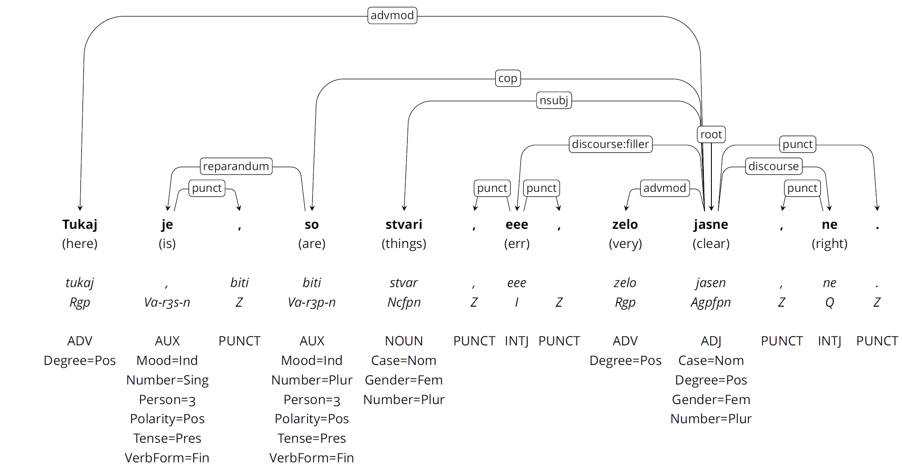
1The extension of the Spoken Slovenian Treebank (SST) has been extensively documented in the aforementioned previous work,19 which is why we only summarize the key steps below and refer readers to that paper for detailed descriptions.
1To address the limitations of the original SST corpus—namely its relatively small size and fragmented data—the treebank was extended by a minimum of 50,000 new tokens, while maintaining representativeness with respect to the updated GOS 2.1 reference corpus of spoken Slovenian.20 The sampling procedure, designed in collaboration with the Mezzanine project,21 involved two main steps. First, 22 samples from GOS 1 events in the original SST were expanded by approximately 450 additional words each, yielding about 10,000 new words. Second, 57 new speech events from the ARTUR subset were added, each contributing around 800 words, totaling approximately 40,000 new words. To ensure coherent syntactic structures, the ARTUR data—originally segmented at pause boundaries—was automatically re-segmented based on sentence-final punctuation, producing more syntactically and semantically meaningful units.22 The exact counts, which also account for the post-festum modifications of the data described in the following sections, are reported in Section 3 (Table 1).
1The annotation process began with a semi-automated morphological annotation, documented by Čibej and Munda (2024),23 which was then used for automatic parsing using the Trankit. Each of the 79 document-level files was subsequently assigned to 2–3 independent annotators, who manually verified and corrected the annotations using the Q-CAT tool,24 enhanced with audio support via embedded URLs. The curation process was completed in WebAnno25 to reconcile multiple annotations and ensure consistency with updated guidelines.
2In the process, we developed a new and improved version of the UD guidelines for Slovenian, which now account for numerous speech-specific phenomena such as self-repairs and discourse markers. These updates build upon our previous annotation experience26 and incorporate recent practices and discussions within the community.27 The guidelines are available as a standalone document in Slovenian28 and as an abbreviated version of the Slovenian UD guidelines online in English.29
1Finally, both manually revised datasets—the original SST and the new GOS 2 data—were merged and consolidated. This process involved harmonizing metadata formatting, punctuation, and letter-case principles across the subsets. Sentence-medial and sentence-final punctuation was semi-automatically added to GOS 1 transcriptions using the Slovene Punctuator tool,30 followed by manual corrections to align with the conventions of the ARTUR dataset.31 Non-lexical tokens, such as [audience:laughter] and [pause], were removed to ensure consistency with ARTUR and UD treebank trends in general.32 These and other non-lexical phenomena can still be accessed from the transcriptions of the reference GOS 2.1 corpus if necessary.
2The final data consolidation also included correcting transcription errors, such as erroneous capitalization caused by automatic letter case unification in GOS 2.1, and resolving tokenization issues flagged during UD validation. Morphological annotation inconsistencies were also corrected, including lemmatization errors and refinements to specific categories like colloquial expressions and anonymized names.
1This section presents the contents of the new SST treebank with respect to its size, diversity of spoken data included, and availability.
1As shown in Table 1, the resulting new, extended and revised, SST treebank based on approximately 10 hours of transcribed speech includes 344 unique speech events (documents) with a total of 6,108 utterances and 98,393 tokens. In comparison to the previous edition of the treebank (prior to the revisions presented in this paper),33 the new SST treebank includes more than triple the number of transcribed tokens (+334%) and almost double the number of utterances (+196%), as well as a more varied set of events (+ 11%) and speakers (+ 11%). The average length of a (sampled) document has been extended from an average of 103 tokens per document to 286 tokens per document. As such, the SST treebank is one of the largest spoken language treebanks annotated in Universal Dependencies, surpassed only by the Naija UD treebank.
| Subset | Events | Speakers | Utterances | Tokens |
| SST-2016 (revised) | 287 | 594 | 2,903 | 36,960 |
| New from GOS 1 | 22 | 61 | 1,236 | 13,112 |
| New from ARTUR | 57 | 72 | 1,969 | 48,321 |
| SST-2024 (UD 2.15) | 344 | 676 | 6,108 | 98,393 |
1At the same time, the new SST treebank remains representative with respect to the reference GOS 2.1 and, indirectly, to Slovenian speech in general, as shown in Figures 2 to 5, which report the number of tokens per different types of speech events,34 communication channels and speaker demographics.
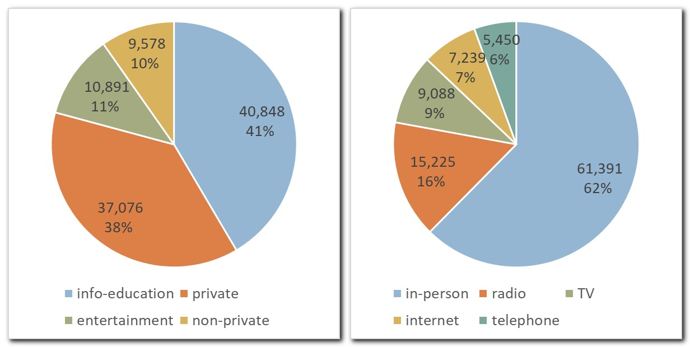
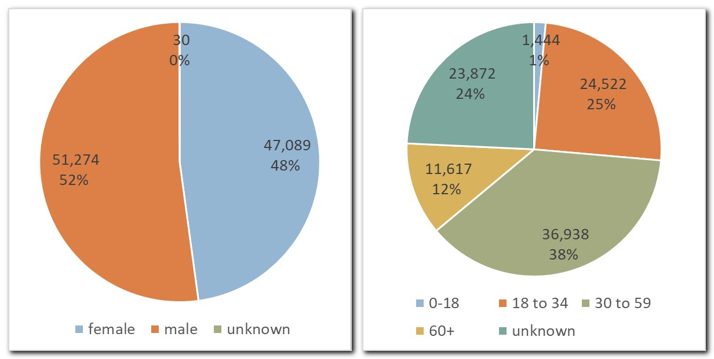
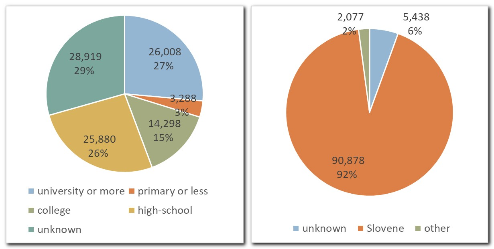
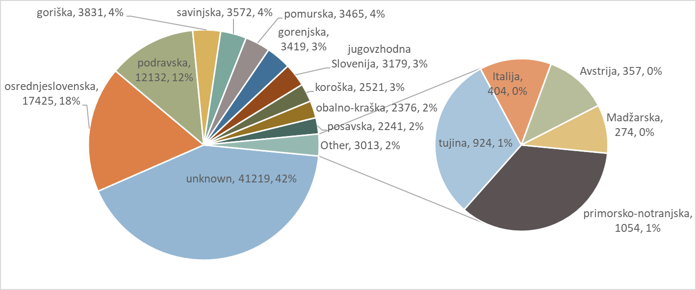
1The latest version of the SST treebank was released as part of UD v2.15,35 and is freely available under the CC-BY license, replacing the previous CC-BY-NC license that prohibited commercial use. The dataset follows the standard UD data split protocol, dividing the data into training, development, and test sets with approximate token distributions of 80%, 10%, and 10%, respectively. This revision aligns the SST data split with the ROG corpus (see below), ensuring an even distribution of ROG-ARTUR data across subsets, while maintaining the original principles of randomized, document-level segmentation for representativeness with respect to different event and speaker types (Section 3.2).
2The treebank is encoded in the standard CONLL-U format,36 illustrated in Figure 6, with detailed token-level annotations and metadata in comment lines (e.g., speaker ID, document ID, audio URLs, pronunciation-based spelling).37 This ensures that all additional metadata—such as non-lexical tokens and detailed event and speaker data—can be traced and retrieved from the reference GOS corpus using persistent IDs.38
3In addition to the official CONLL-U release and its availability on GitHub,39 the SST treebank is also accessible via online tools for UD querying and visualization, including Grew-match,40 INESS, 41 and the locally developed Drevesnik service,42 based on the open-source dep_search tool.43 These services support comprehensive exploration of the dataset, with some offering advanced query functions or even enabling audio playback.
4Finally, the new SST treebank also serves as the backbone of the recently released ROG training corpus of spoken Slovenian,44 which includes additional annotation layers for disfluencies, dialogue acts, and prosody boundaries in the ROG-ARTUR subset and is available in formats that support visualization and browsing in the EXMARaLDA tool.45
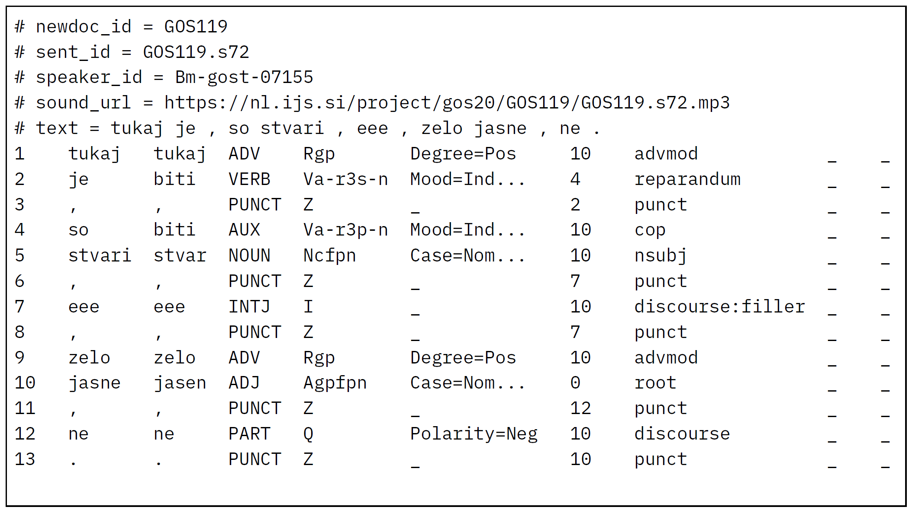
1To illustrate the relevance of this newly created resource for further research on spoken Slovenian, we compare the new SST treebank with its written counterpart, the SSJ UD treebank of written Slovenian,46 which has been annotated using the same annotation scheme and thus enables direct comparison of annotations on various levels. To neutralize the effect of punctuation—an artefact in spoken language—the comparison is based on versions of the treebanks with punctuation removed. The results thus reflect the analysis of all uttered phenomena rather than all transcribed phenomena.
1The comparison of the vocabulary in Table 2 shows that, despite the spoken SST treebank being much smaller than its written counterpart, there are as many as 5,242 unique words (39.5% of all word types in SST) and 2,293 (30.1%) unique lemmas featured in the SST treebank that do not occur in the written SSJ treebank, confirming previous findings47 on the unique lexical characteristics of spoken Slovenian.48
| SST (spoken) | SSJ (written) | |||
| Words | 76,341 | 227,619 | ||
| Word types | 13,268 | 48,570 | ||
| Unique word types | 5,242 | 40,544 | ||
| Lemma types | 7,617 | 25,352 | ||
| Unique lemma types | 2,293 | 20,028 |
1The comparison of part-of-speech tag frequencies per thousand words shown in Figure 7 reveals that the two modalities also differ with respect to the type of vocabulary used. For instance, spoken language exhibits a much higher frequency of word classes pertaining to interaction, subjectivity, deixis and modification, such as particles (PART), adverbs (ADV), interjections (INTJ), determiners (DET) and pronouns (PRON). The higher frequency of verbs (VERB) in spoken language also suggests a more dynamic narrative style, while a higher frequency of nouns (NOUN, PROPN), adjectives (ADJ) and prepositions (ADP) in written communication suggests a denser information structure and more descriptive content. Our findings confirm that spoken and written communication exhibit distinct tendencies towards nominal and verbal styles, aligning with Douglas Biber’s seminal work on register variation.49
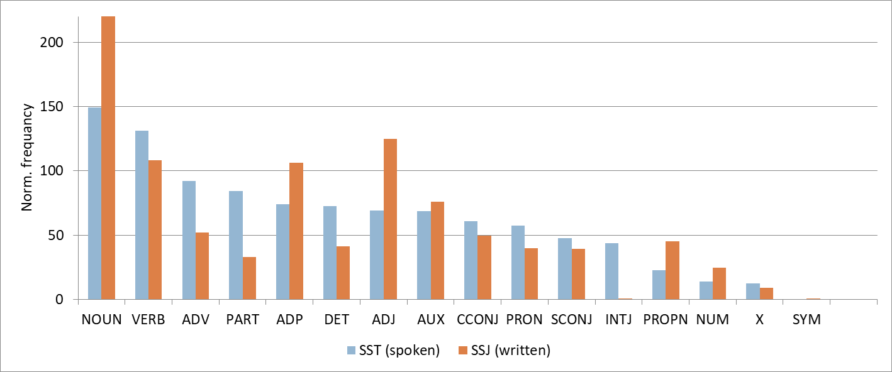
1Finally, we compare the distribution of the dependency relations (syntactic functions of words) across the two datasets.
1Figure 8 shows the comparison of the distribution of the predicate arguments, namely the nominal or clausal subjects (nsubj, csubj), objects (obj, iobj, ccomp) and adjuncts (advmod, obl, advcl). Interestingly, there are no major differences observed in the distribution of core arguments within each treebank, confirming that similar clause pattern strategies are used in both modalities. However, the notable differences in the frequency of some relations in both treebanks confirm the aforementioned nominal-heavy nature of written communication, i.e. more nominal subject (nsubj), objects (obj, iobj) and adjuncts (obl) in the written SSJ treebank. At the same time, the clauses in spoken language contain a much higher percentage of adverbial modification (advmod),50 which could be explained by the abundance of modal adverbials, which speakers use to express stance, convey attitude, and balance the interaction.
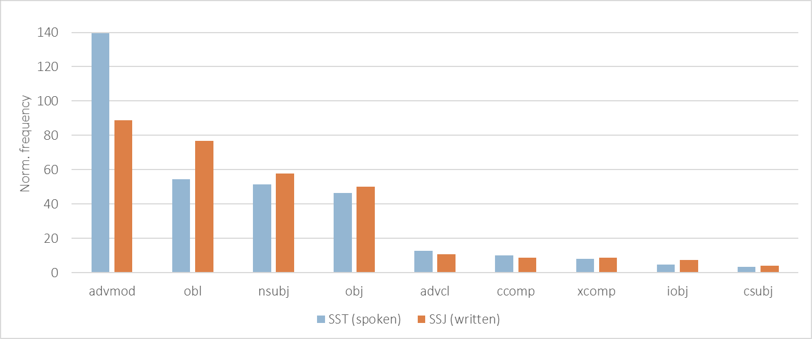
1In contrast to the much higher number of discourse elements (discourse), vocatives (vocative), and fronted or postponed elements (dislocated) in SST, which only rarely occur in written data, the differences in the distribution of other dependants of predicates (reported in Figure 9) are less pronounced, with two exceptions. First, spoken communication seems to show a preference for simple verbs phrases in the present tense (i.e. less auxiliary verbs marked with aux). Second, despite the very similar frequency of subordinate clauses in both modalities (csubj, ccomp and advcl in Figure 8 and acl in Figure 10), spoken data exhibits a higher number of subordinate conjunctions (mark). This finding requires further investigation, but may be related to the more frequent use of subordinate clauses as standalone utterances in spoken interaction—for example, as responses or elaborations on prior turns in conversation (e.g. replying Ker dežuje ‘Because it is raining’ to a question about why an event was cancelled).
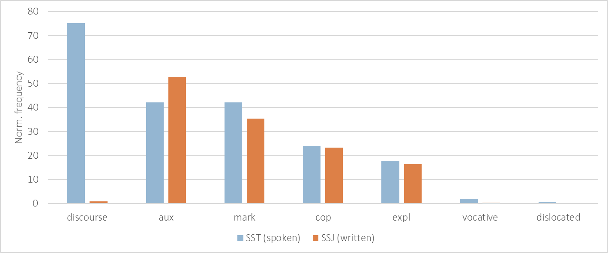
1The comparison of the distribution of the relations pertaining to the dependents of nominals (e.g. noun phrase constituents) in Figure 10 shows that spoken communication exhibits a lower frequency of modifiers of nouns, such as adjectival (amod), nominal and prepositional (nmod, case), numerical (nummod), clausal (acl) and appositional (appos) modifiers. This is in line with the aforementioned lower number of nominal phrases in speech (Figure 7), but also suggests an overall simpler structure of such phrases (i.e. less pre- and post-modification of nouns). The only exception to this rule is the higher frequency of determiners (det) in SST, which can be explained by the frequent use of demonstrative pronouns and other context-grounding deictical premodifiers in speech.
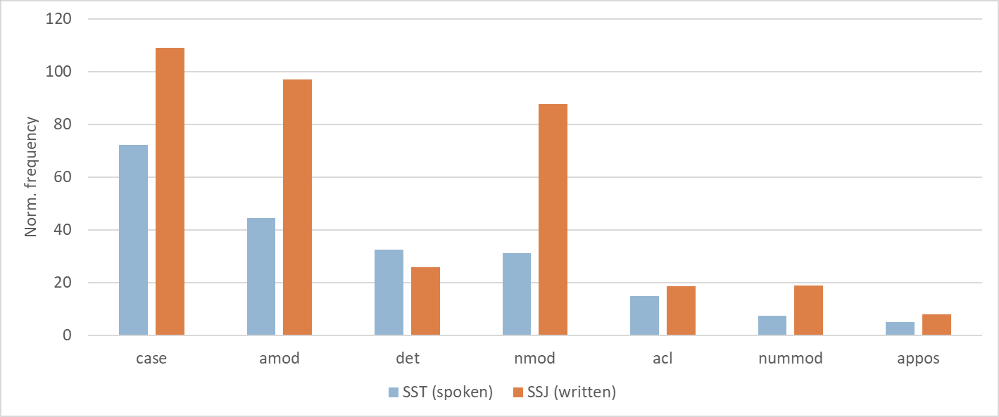
1Last, Figure 11 shows the comparison of the distribution for all other types of dependency relations that do not fall into any of the main syntactic categories mentioned above. Naturally, the biggest differences between both modalities can be observed for the reparandum relation pertaining to speech repairs, which only occur in the spoken treebank.
2The second important observation is that sentences in speech are generally much shorter than in writing. This is not only reflected by the difference in the average number of words per utterance/sentence (i.e. the frequency of root elements in a treebank),51 but also by the higher frequency of parataxis relation, which is used for run-on clauses with no linking conjunction.
3Our results also confirm the elliptical nature of spoken communication, with SST exhibiting a higher frequency of orphan relations, which are used to mark core arguments in cases of predicate ellipsis. We can also observe that speech features a higher number of coordinating conjunctions (cc) in relation to the number of coordinating conjuncts (conj); however, the cause might be attributed to various reasons, such as a higher number of discourse-structuring devices in speech in general (see the higher frequency of subordinating conjunctions labeled as mark in Figure 10) or longer coordination phrases in writing (i.e. multiple conjuncts).
4Last, SST treebank also features a larger number of fixed multi-word expressions, which is in line with previous findings on the formulaic nature of this type of communication.52 On the other hand, flat multi-word expressions (mainly encompassing personal names and foreign named entities) occur less often in speech.
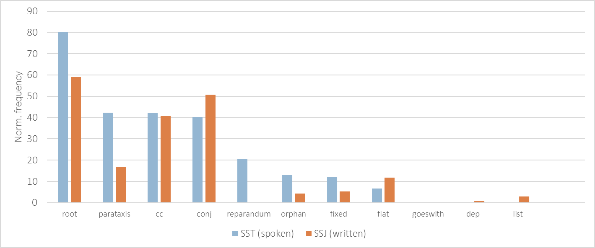
1Finally, the new SST treebank was also used to train speech-specific models of two state-of-the-art tools for automatic grammatical annotation: Trankit53 and CLASSLA-Stanza,54 to complement their standard models trained solely on written data. While various speech-specific models incorporating SST data have been developed for experimental purposes, we present the best-performing speech-specific model(s)55 of each tool and compare it to its standard counterparts trained only on written data. For both tools, the best-performing speech models were trained on a combination of spoken (SST) and written (SSJ/SUK) data, aligning with previous findings on the advantages of joint modelling for spoken data annotation.56
2Thus, the following models have been featured in the evaluation:
3We report the evaluation of all models on both written (SSJ) and spoken test sets (SST) in Table 3, using the standard F1 evaluation metric for lemmatization (LEMMA), part-of-speech tagging (UPOS), full morphology prediction (XPOS) and labelled attachment score (LAS), which measures the correct assignment of dependency heads and relations.61 Due to space restrictions, we highlight here only the four most relevant findings among the many interesting results.
| SSJ-test (written) | SST-test (spoken) | ||||||||
| Lemmas | UPOS | XPOS | LAS | Lemmas | UPOS | XPOS | LAS | ||
| Standard Trankit | 98.07 | 99.12 | 98.24 | 95.48 | 98.16 | 95.33 | 93.93 | 79.14 | |
| Spoken Trankit | 98.1 | 99.17 | 98.27 | 95.36 | 98.85 | 98.97 | 98.02 | 87.93 | |
| Standard CLASSLA-Stanza | 98.87 | 98.52 | 96.89 | 90.42 | 98.68 | 92.86 | 91.39 | 69.81 | |
| Spoken CLASSLA-Stanza | 98.8 | 98.66 | 96.65 | 90.09 | 99.23 | 98.15 | 96.76 | 81.91 |
1Our results confirm previous findings that the performance of standard models trained on written data drops significantly when applied to transcribed speech. This is especially evident in syntactic parsing, where we observe an LAS decrease of 16.3pp for the standard Trankit model and 20.6pp for the standard CLASSLA-Stanza model, when applied to the spoken SST test set. These results reinforce that spoken data presents a significant challenge for standard off-the-shelf NLP models.
1The performance of both tools on spoken data improves substantially when spoken (SST) data is included in training, as seen in the newly released speech-adapted models. For part-of-speech tagging and morphological feature prediction, both tools show a gain of approximately 3–5pp when using spoken models. Notably, their performance on spoken data now matches their performance on written data, achieving F1 scores of 98–99 for lemmatization, part-of-speech tagging, and full morphology prediction in both modalities.
2For syntactic parsing, the improvements are even more pronounced. Compared to their written counterparts, the spoken Trankit model achieves an LAS improvement of 8.8pp, while the spoken CLASSLA-Stanza model sees a 12.1pp gain. As expected, spoken data parsing remains challenging, with an approximately 8pp gap between the best-performing parsing scores on speech and writing for both tools.62 Nevertheless, these significant improvements highlight the value of SST data in enhancing spoken language processing and underscore the need for continued development of speech-aware models and tools.
1Perhaps the most surprising finding is that for both tools, the newly available spoken models—trained on both written and spoken data—perform just as well on written data as the standard models, trained on written data alone. In other words, incorporating spoken data into training improves performance on speech without compromising performance on standard written text. This challenges the traditional written vs. spoken or standard vs. domain-adapted divide and suggests that these models should not be seen as speech-specific but rather as new state-of-the-art universal models, capable of delivering top-tier performance across both language modalities.
1The timely inclusion of SST in two state-of-the-art tools for processing Slovenian is a significant step forward, as each tool has its own strengths. However, in terms of overall performance, the transformer-based Trankit generally outperforms CLASSLA-Stanza across both modalities and all metrics, except for lemmatization, where CLASSLA-Stanza has a slight advantage due to larger training set for written data (1M words in the SUK corpus compared to 270k in SSJ) and lexicon control via the Sloleks morphological dictionary. Trankit, in particular, demonstrates a notable advantage in dependency parsing, with LAS scores of the spoken-universal model reaching 95.36 on written data and 87.93 on spoken data. In comparison, CLASSLA-Stanza exhibits approximately 5–6pp lower parsing performance across both modalities.
1We have presented a new version of the reference morphosyntactically parsed corpus of spoken Slovenian, the Spoken Slovenian Treebank (SST), which has recently been extended to include more than triple the number of transcribed words and almost double the number of utterances compared to the original SST. As such, this newly available resource represents a significant addition to the Slovenian language resource landscape—ready to be exploited and further extended—and provides a valuable model for similar efforts in other languages. To support such initiatives, we share several key lessons learned during the development of SST.
2First, we offer several recommendations for developing a spoken treebank resource. Anchoring the treebank in a well-established reference corpus, such as GOS, reduces annotation workload, increases the visibility and uptake of the resource, and allows direct mapping to richly transcribed speech phenomena—such as original audio recordings, layered orthographic and phonetic transcriptions, and detailed speaker or event metadata—that go well beyond what can be represented in minimalist tabular formats like CoNLL-U. Sampling is equally critical: longer and more representative speech events expand the range of linguistic phenomena that can be studied, including discourse-level structures, rather than limiting analyses to isolated sentences or speaker turns. Some limitations of the current SST still reflect overly short or fragmented sampling.
3When it comes to annotation, pre-annotation with high-accuracy parsers—whether off-the-shelf or custom-trained—can significantly speed up the process by allowing annotators to focus on the more challenging structures, which are particularly frequent in the under-researched spoken language communication. However, these structures also require consistent, well-documented treatment; it is therefore crucial to clearly record annotation principles, from segmentation to specific grammatical annotation decisions. In the context of the UD annotation initiative, this means not only maintaining internal consistency, but also aligning with cross-linguistic practices and established guidelines. Current efforts within the UniDive COST action63 are especially valuable in this regard, as they aim to harmonize treebank guidelines for spoken language across multiple languages and projects.
4Second, the SST provides essential infrastructure for advancing linguistic research on spoken language. Our comparison with the written SSJ treebank shows that the differences between speech and writing are not limited to lexis, but extend to the distribution of parts of speech, syntactic relations, and overall structural organization. These distinctions highlight the need for dedicated spoken treebanks, which can reveal patterns that remain obscured in written data alone. With its rich metadata and representative sampling, the SST enables targeted investigations into how syntactic choices vary across social and contextual dimensions—such as gender, age, dialect, or communicative setting. Some of these possibilities have already been illustrated, for example in studies of self-repair strategies across private and public speech, and speaker gender.64 Moreover, having the treebank aligned with a language-independent scheme, such as UD, opens up unprecedented possibilities for cross-linguistic investigations of spoken language grammar, enabling systematic identification of truly universal and language-specific grammatical features in speech. The SST has already proven useful in such efforts, including recent comparative studies on syntactic diversity65 and word order variation66 across speech and writing.
5Third, the distinct nature of spoken language has important implications for NLP. Our evaluation clearly shows that parsing models trained on the new SST substantially outperform standard models trained exclusively on written data when applied to transcribed speech. This highlights the practical importance of developing treebanks that reflect the characteristics of spoken communication. With the SST now available, we now have state-of-the-art models capable of accurately parsing spoken Slovenian, opening up the possibility of extending grammatical annotation to larger corpora, such as the full GOS reference corpus. Looking ahead, further improvements will depend on moving beyond transcripts and incorporating the full communicative context—including prosody, audio, and multimodal cues—to better approximate how humans process language. Since SST includes aligned recordings, much of this groundwork is already in place. More broadly, our findings contribute to the growing recognition within the NLP community that diversity in training data—including non-standard and spoken varieties—not only enhances the processing of underrepresented domains but also strengthens the performance of general-purpose models. Our findings thus suggest that investing in broadly trained parsing models on diverse data can support both accurate processing of underrepresented varieties and more inclusive data analysis.
1In this paper, we presented the recent extension of the Spoken Slovenian Treebank with more than 3,000 new manually parsed utterances, resulting in a new, balanced and representative, version of the corpus to be used in linguistic, computational and other empirical investigations of spoken Slovenian. We made a first step in this direction by showcasing the key lexical and morphosyntactic characteristics that distinguish speech from writing, and presenting their significance for developing speech-aware NLP tools. Our findings suggest that training parsers on richly varied data—rather than restricting them to narrow domains—may be a worthwhile direction for building more inclusive and robust language processing tools.
1This work was financially supported by the Slovenian Research and Innovation Agency through the research projects Treebank-Driven Approach to the Study of Spoken Slovenian (Z6-4617), Large Language Models for Digital Humanities (GC-0002), and the research program Language Resources and Technologies for Slovene (P6-0411). In addition to the collaborators from the Mezzanine project (J74642) who have been involved with the data sampling and morphological annotation (Jaka Čibej, Tina Munda, Nikola Ljubešić, Peter Rupnik, Darinka Verdonik), we also wish to thank the data annotators (Nives Hüll, Karolina Zgaga, Luka Terčon, Matija Škofljanec) and the technical collaborators who have contributed to data pre-annotation (Luka Krsnik), audio re-segmentation (Janez Križaj, Simon Dobrišek, Tomaž Erjavec), and model evaluation (Luka Krsnik, Luka Terčon). Generative AI tools were used to support language editing during the preparation of this manuscript; full responsibility for the content remains with the authors.
Kaja Dobrovoljc
1Prispevek predstavlja novo različico drevesnice govorjene slovenščine (SST), skladenjsko razčlenjenega korpusa transkribiranega spontanega govora, ki je bil nedavno razširjen z več kot 3.000 novimi izjavami in več kot 60.000 pojavnicami. Nova različica SST temelji na referenčnem korpusu GOS 2.1 in vključuje 344 govornih dogodkov z raznoliko zastopanostjo govorcev in sporazumevalnik okoliščin. Po kratkem pregledu postopkov vzorčenja, označevanja in končnega usklajevanja podatkov predstavimo primerjalno analizo med govorno drevesnico SST in referenčno pisno drevesnico SSJ, ki potrjuje številne leksikalne, oblikoslovne in skladenjske posebnosti govorjenega jezika v primerjavi s pisnim. V govorjeni slovenščini tako najdemo več struktur, povezanih z interakcijo, sprotnim načrtovanjem govora, subjektivnostjo, deiktičnostjo, modifikacijo, elipso in strukturiranjem diskurza, po drugi strani pa manj samostalniških zvez, ki so tudi bolj preprosto sestavljene.
2Glede na to, da je bila drevesnica SST kmalu po objavi že uporabljena za razvoj novih modelov za slovnično označevanje (transkripcij) govorjene slovenščine v orodjih CLASSLA-Stanza in Trankit, v nadaljevanju predstavimo sistematično primerjavo modelov, naučenih zgolj na pisnih besedilih, in modelov, naučenih tako na pisnih kot govorjenih besedilih. Rezultati kažejo, da so pri slovničnem označevanju govora modeli, naučeni na kombinaciji govorjenih in pisanih podatkov, bistveno boljši od modelov, naučenih zgolj na pisnih besedilih, zlasti pri nalogi skladenjskega razčlenjevanja. Obenem so ti 'mešani' modeli tudi pri označevanju pisnih besedil ohranjajo enako stopnjo natančnosti kot standardni pisni modeli, na podlagi česar lahko sklenemo, da gre za robustne univerzalne modele, ki dosegajo najboljše možne rezultate tako na pisnih kot govorjenih besedilih.
3V diskusiji rezultate povzamemo in jih nadgradimo z razpravo o najpomembnejših izkušnjah, pridobljenih med razvojem drevesnice SST, ki letos obeležuje že deset let od prve objave. Izpostavimo prednosti uporabe referenčnega korpusa kot izhodišča, priporočimo vzorčenje daljših, zaključenih besedil in sistematično dokumentiranje označevalnih smernic ter poudarimo pomen usklajenosti z mednarodnimi označevalnimi pobudami, kot je shema Universal Dependencies. V sklepnem delu neprecenljiv metodološki potencial tega jezikovnega vira ponazorimo z omembo več aktualnih raziskav in številnimi možnostmi nadaljnjih raziskav tako na področju jezikoslovja kot jezikovnih tehnologij.
* PhD, Res. Assoc. Faculty of Arts, University of Ljubljana, Aškerčeva 2, SI-1000 Ljubljana, Slovenia; Jožef Stefan Institute, Jamova 39, SI-1000 Ljubljana, kaja.dobrovoljc@ff.uni-lj.si, ORCID: 0000-0002-5909-7965.
1. Erhard Hinrichs and Sandra Kübler, “Treebank Profiling of Spoken and Written German,” in Proceedings of the Fourth Workshop on Treebanks and Linguistic Theories (TLT 2005): 9–10 December 2005, Barcelona, eds. Montserrat Civit Torruella, Sandra Kübler, and María Antonia Martí Antonín, 65–76 (Barcelona: Universitat de Barcelona, 2005). Paola Pietrandrea and Aline Delsart, “Chapter 16. Macrosyntax at Work: Functions and Distribution of Macrosyntactic Patterns in the Rhapsodie Corpus,” in Rhapsodie: A Prosodic and Syntactic Treebank for Spoken French, eds. Anne Lacheret-Dujour, Sylvain Kahane, and Paola Pietrandrea (Amsterdam: John Benjamins Publishing Company, 2019), 285–314, https://doi.org/10.1075/scl.89.17pie. Ineke Schuurman, Marijke Schouppe, and Henk Hoekstra, “Harvesting Dutch Trees: Syntactic Properties of Spoken Dutch,” in Computational Linguistics in the Netherlands 2002: Selected Papers from the Thirteenth CLIN Meeting, ed. Tanya Gaustad (Amsterdam: Rodopi, 2003), 129–41.
2. Zoey Liu and Emily Prud’hommeaux, “Dependency Parsing Evaluation for Low-Resource Spontaneous Speech,” in Proceedings of the Second Workshop on Domain Adaptation for NLP, eds. Eyal Ben-David, Shay Cohen, Ryan McDonald, Barbara Plank, Roi Reichart, Guy Rotman, and Yftah Ziser (Kyiv, Ukraine: Association for Computational Linguistics, April 2021), 156–65, https://aclanthology.org/2021.adaptnlp-1.16/. Anouck Braggaar and Rob van der Goot, “Challenges in Annotating and Parsing Spoken, Code-Switched, Frisian-Dutch Data,” in Proceedings of the Second Workshop on Domain Adaptation for NLP, eds. Eyal Ben-David, Shay Cohen, Ryan McDonald, Barbara Plank, Roi Reichart, Guy Rotman, and Yftah Ziser (Kyiv, Ukraine: Association for Computational Linguistics, April 2021), 50–58, https://aclanthology.org/2021.adaptnlp-1.6/. Caines, Andrew, Michael McCarthy, and Paula Buttery, “Parsing Transcripts of Speech,” in Proceedings of the Workshop on Speech-Centric Natural Language Processing (SCNLP@EMNLP 2017), eds. Nicholas Ruiz and Srinivas Bangalore (Copenhagen, Denmark: Association for Computational Linguistics, September 7, 2017), 27–36, https://doi.org/10.18653/v1/w17-4604. Kaja Dobrovoljc and Matej Martinc, “Er ... Well, It Matters, Right? On the Role of Data Representations in Spoken Language Dependency Parsing,” in Proceedings of the Second Workshop on Universal Dependencies (UDW 2018), eds. Marie-Catherine de Marneffe, Teresa Lynn, and Sebastian Schuster (Brussels, Belgium: Association for Computational Linguistics, November 2018), 37–46, https://doi.org/10.18653/v1/W18-6005.
3. J. J. Godfrey, E. C. Holliman, and J. McDaniel, “SWITCHBOARD: Telephone Speech Corpus for Research and Development,” in Proceedings of the 1992 IEEE International Conference on Acoustics, Speech, and Signal Processing (ICASSP-92), 517–520, vol. 1. San Francisco, CA, USA: IEEE, 1992, https://doi.org/10.1109/ICASSP.1992.225858. John J. Godfrey and Edward Holliman, Switchboard-1 Release 2 LDC97S62. Web Download. Philadelphia: Linguistic Data Consortium, 1993, https://doi.org/10.35111/sw3h-rw02.
4. Ton van der Wouden, Heleen Hoekstra, Michael Moortgat, Bram Renmans, and Ineke Schuurman, “Syntactic Analysis in the Spoken Dutch Corpus (CGN),” in Proceedings of the Third International Conference on Language Resources and Evaluation (LREC’02), eds. Manuel González Rodríguez and Carmen Paz Suarez Araujo (Las Palmas, Canary Islands, Spain: European Language Resources Association (ELRA), May 2002), https://aclanthology.org/L02-1071/. Dutch Language Institute. Corpus Gesproken Nederlands – CGN (Version 2.0.3), 2014, data set, http://hdl.handle.net/10032/tm-a2-k6.
5. Jan Hajič, Silvie Cinková, Marie Mikulová, Petr Pajas, Jan Ptáček, Josef Toman, and Zdeňka Urešová, “PDTSL: An Annotated Resource for Speech Reconstruction,” in 2008 IEEE Spoken Language Technology Workshop (IEEE, 2008), 93–96, https://doi.org/10.1109/SLT.2008.4777848. Jan Hajič, Petr Pajas, David Mareček, Marie Mikulová, Zdeňka Urešová, and Petr Podveský, Prague Dependency Treebank of Spoken Language (PDTSL) 0.5. LINDAT/CLARIAH-CZ digital library at the Institute of Formal and Applied Linguistics (ÚFAL), Faculty of Mathematics and Physics, Charles University, 2009, http://hdl.handle.net/11858/00-097C-0000-0001-4914-D.
6. Lilja Øvrelid, Anne Kåsen, Kristin Hagen, Anders Nøklestad, and Janne Bondi Johannessen, “The LIA Treebank of Spoken Norwegian Dialects,” in Proceedings of the Eleventh International Conference on Language Resources and Evaluation (LREC 2018), 4482–88. 2018,https://www.nb.no/sprakbanken/en/resource-catalogue/oai-tekstlab-uio-no-lia-trebanken/. Andre Kåsen, Kristin Hagen, Anders Nøklestad, Joel Priestly, Per Erik Solberg, and Dag Trygve Truslew Haug, “The Norwegian Dialect Corpus Treebank,” in Proceedings of the Thirteenth Language Resources and Evaluation Conference, eds. Nicoletta Calzolari, Frédéric Béchet, Philippe Blache, Khalid Choukri, Christopher Cieri, Thierry Declerck, Sara Goggi, Hitoshi Isahara, Bente Maegaard, Joseph Mariani, Hélène Mazo, Jan Odijk, and Stelios Piperidis (Marseille, France: European Language Resources Association, June 2022), 4827–32, https://aclanthology.org/2022.lrec-1.516/,https://www.nb.no/sprakbanken/en/resource-catalogue/oai-tekstlab-uio-no-ndc-trebanken/.
7. Anne Lacheret-Dujour, Sylvain Kahane, and Paola Pietrandrea, eds. Rhapsodie: A Prosodic and Syntactic Treebank for Spoken French. Studies in Corpus Linguistics 89. Amsterdam: John Benjamins Publishing Company, 2019, https://doi.org/10.1075/scl.89, https://github.com/UniversalDependencies/UD_French-Rhapsodie.
8. Erhard W. Hinrichs, Julia Bartels, Yasuhiro Kawata, Valia Kordoni, and Heike Telljohann, “The Tübingen Treebanks for Spoken German, English, and Japanese,” in Verbmobil: Foundations of Speech-to-Speech Translation, ed. Wolfgang Wahlster (Berlin, Heidelberg: Springer Berlin Heidelberg, 2000), 550–74, https://doi.org/10.1007/978-3-662-04230-4_40. Bavarian Archive for Speech Signals (BAS). VM2 – Speech Corpus, 2016, http://hdl.handle.net/11022/1009-0000-0000-FC55-5.
9. Lisa Pearl and Jon Sprouse, “Syntactic Islands and Learning Biases: Combining Experimental Syntax and Computational Modeling to Investigate the Language Acquisition Problem,” Language Acquisition 20, No. 1 (2013): 23–68, https://doi.org/10.1080/10489223.2012.738742.
10. Marie-Catherine de Marneffe, Christopher D. Manning, Joakim Nivre, and Daniel Zeman, “Universal Dependencies,” Computational Linguistics 47, No. 2 (2021): 255–308, https://doi.org/10.1162/coli_a_00402. Kaja Dobrovoljc, “Spoken Language Treebanks in Universal Dependencies: An Overview,” in Proceedings of the Thirteenth Language Resources and Evaluation Conference, (Marseille, France: ELRA, 2022), 1798–806, https://aclanthology.org/2022.lrec-1.191/.
11. Kaja Dobrovoljc and Joakim Nivre, “The Universal Dependencies Treebank of Spoken Slovenian,” in Proceedings of the Tenth International Conference on Language Resources and Evaluation (LREC’16) (Portorož: ELRA, 2016), 1566–73, https://aclanthology.org/L16-1248/.
12. Anja Zwitter Vitez, Jana Zemljarič Miklavčič, Simon Krek, Marko Stabej, and Tomaž Erjavec, “Spoken Corpus Gos 1.1,” http://hdl.handle.net/11356/1438 (Slovenian language resource repository CLARIN.SI, 2021). Darinka Verdonik, Iztok Kosem, Ana Zwitter Vitez, Simon Krek, and Marko Stabej, “Compilation, Transcription and Usage of a Reference Speech Corpus: The Case of the Slovene Corpus GOS,” Language Resources and Evaluation 47, No. 4 (2013): 1031–48, https://doi.org/10.1007/s10579-013-9216-5.
13. Tomaž Erjavec, “MULTEXT-East,” in Handbook of Linguistic Annotation, eds. Nancy Ide and James Pustejovsky, 441–62. Dordrecht: Springer, 2017, https://doi.org/10.1007/978-94-024-0881-2_17.
14. Kaja Dobrovoljc, Tomaž Erjavec, and Simon Krek, “The Universal Dependencies Treebank for Slovenian,” in Proceedings of the 6th Workshop on Balto-Slavic Natural Language Processing, (Association for Computational Linguistics, 2017), 33–38, https://doi.org/10.18653/v1/W17-1406. Kaja Dobrovoljc, Luka Terčon, and Nikola Ljubešić, “Universal Dependencies za slovenščino: Nove smernice, ročno označeni podatki in razčlenjevalni model,” Slovenščina 2.0: Empirical, Applied and Interdisciplinary Research 11, No. 1 (2023): 218–46, https://doi.org/10.4312/slo2.0.2023.1.218-246.
15. Kaja Dobrovoljc and Matej Martinc, “Er ... Well, It Matters, Right? On the Role of Data Representations in Spoken Language Dependency Parsing,” in Proceedings of the Second Workshop on Universal Dependencies (UDW 2018), eds. Marie-Catherine de Marneffe, Teresa Lynn, and Sebastian Schuster (Brussels, Belgium: Association for Computational Linguistics, November 2018), 37–46, https://doi.org/10.18653/v1/W18-6005. Darinka Verdonik, Kaja Dobrovoljc, Tomaž Erjavec, and Nikola Ljubešić, “Gos 2: A New Reference Corpus of Spoken Slovenian,” in Proceedings of the 2024 Joint International Conference on Computational Linguistics, Language Resources and Evaluation (LREC-COLING 2024), eds. Nicoletta Calzolari, Min-Yen Kan, Veronique Hoste, Alessandro Lenci, Sakriani Sakti, and Nianwen Xue (Torino, Italy: ELRA and ICCL, May 2024), 7825–30, https://aclanthology.org/2024.lrec-main.691/.
16. Treebank-driven approach to the study of Spoken Slovenian, ARIS grant No. Z6-4617, https://spot.ff.uni-lj.si/
17. Kaja Dobrovoljc, “Extending the Spoken Slovenian Treebank,” in Proceedings of the Conference on Language Technologies and Digital Humanities (Ljubljana, Slovenia, 2024), 116–46, https://doi.org/10.5281/zenodo.13936393.
18. Zeman, et al., “Universal Dependencies 2.15,” http://hdl.handle.net/11234/1-5787 (LINDAT/CLARIAH-CZ digital library at the Institute of Formal and Applied Linguistics (ÚFAL), Faculty of Mathematics and Physics, Charles University, 2024.)
19. Kaja Dobrovoljc, “Extending the Spoken Slovenian Treebank.”
20. Darinka Verdonik, Kaja Dobrovoljc, Tomaž Erjavec, and Nikola Ljubešić, “Gos 2: A New Reference Corpus of Spoken Slovenian,” in Proceedings of the 2024 Joint International Conference. Darinka Verdonik, Ana Zwitter Vitez, Jana Zemljarič Miklavčič, Simon Krek, Marko Stabej, Tomaž Erjavec, Tomaž Potočnik, Mirjam Sepesy Maučec, Simona Majhenič, Andrej Žgank, Andreja Bizjak, Lucija Gril, Simon Dobrišek, Janez Križaj, Marko Bajec, Iztok Lebar Bajec, Tjaša Jelovšek, Mitja Trojar, Mitja Bernjak, Naum Dretnik, Gregor Strle, Kaja Dobrovoljc, Nikola Ljubešić, and Peter Rupnik, Spoken Corpus Gos 2.1 (Transcriptions). Slovenian language resource repository CLARIN.SI, 2023, http://hdl.handle.net/11356/1863.
21. Mezzanine; temeljne raziskave za razvoj govornih vIrov in tehnologij za slovenščino, https://mezzanine.um.si/. Darinka Verdonik, Nikola Ljubešić, Peter Rupnik, Kaja Dobrovoljc, and Jaka Čibej, “Izbor in urejanje gradiv za učni korpus govorjene slovenščine ROG,” Paper presented at the 14th Conference on Language Technologies and Digital Humanities (JT-DH-2024), Ljubljana, Slovenia, September 19–20, 2024. Published by the Institute of Contemporary History, 2024, https://doi.org/10.5281/zenodo.13936425.
22. The re-segmentation was performed fully automatically, except for a few outliers where the absence of sentence-final punctuation in the original ARTUR transcriptions led to exceptionally long utterances. These cases were manually segmented for the UD release v2.16.
23. Jaka Čibej and Tina Munda, “Metoda polavtomatskega popravljanja lem in oblikoskladenjskih oznak na primeru učnega korpusa govorjene slovenščine ROG.” Paper presented at the 14th Conference on Language Technologies and Digital Humanities (JT-DH-2024), Ljubljana, Slovenia, September 19–20, 2024. Published by the Institute of Contemporary History, 2042, https://doi.org/10.5281/zenodo.13936390.
24. Janez Brank, Q-CAT Corpus Annotation Tool 1.5. Slovenian language resource repository CLARIN.SI, http://hdl.handle.net/11356/1844.
25. Seid Muhie Yimam, Iryna Gurevych, Richard Eckart de Castilho, and Chris Biemann, “WebAnno: A Flexible, Web-Based and Visually Supported System for Distributed Annotations,” in Proceedings of the 51st Annual Meeting of the Association for Computational Linguistics: System Demonstrations, 1–6. 2013, https://aclanthology.org/P13-4001. WebAnno - Log in, https://www.clarin.si/webanno/login.html.
26. Kaja Dobrovoljc, and Joakim Nivre, “The Universal Dependencies Treebank of Spoken Slovenian,” in Proceedings of the Tenth International Conference on Language Resources and Evaluation (LREC’16) (Portorož: ELRA, 2016), 1566–73, https://aclanthology.org/L16-1248/.
27. Sylvain Kahane, Bernard Caron, Emmett Strickland, and Kim Gerdes, “Annotation Guidelines of UD and SUD Treebanks for Spoken Corpora: A Proposal,” in Proceedings of the 20th International Workshop on Treebanks and Linguistic Theories (TLT, SyntaxFest 2021), eds. Daniel Dakota, Kilian Evang, and Sandra Kübler, 35–47. Sofia, Bulgaria: Association for Computational Linguistics, December 2021, https://aclanthology.org/2021.tlt-1.4/. Kaja Dobrovoljc, Spoken Language Treebanks in Universal Dependencies: an Overview. In Proceedings of the thirteenth language resources and evaluation conference (pp. 1798–1806).
28. Kaja Dobrovoljc and Luka Terčon, Universal Dependencies: Smernice za označevanje besedil v slovenščini. Različica 1.7., Center za jezikovne vire in tehnologije Univerze v Ljubljani, 2024, https://wiki.cjvt.si/attachments/71.
29. Example of the online Slovenian UD guidelines for speech repairs: https://universaldependencies.org/sl/dep/reparandum.html.
30. GitHub - clarinsi/Slovene_punctuator. toolhttps://github.com/clarinsi/Slovene_punctuator.
31. Darinka, Verdonik and Andreja Bizjak, Pogovorni zapis in označevanje govora v govorni bazi Artur projekta RSDO. Elaborat, predštudija, študija (Maribor: Univerza, 2023), https://dk.um.si/IzpisGradiva.php?lang=slv&id=85198.
32. Kaja Dobrovoljc, “Spoken Language Treebanks in Universal Dependencies: An Overview,” in Proceedings of the Thirteenth Language Resources and Evaluation Conference (Marseille, France: ELRA, 2022), 1798–806, https://aclanthology.org/2022.lrec-1.191/.
33. The original version of the SST treebank (Dobrovoljc and Nivre, 2016) featured 287 events, 594 speakers, 3,188 utterances and 29,488 tokens.
34. Generally, all events feature spontaneous speech, i.e. unscripted verbal communication that occurs naturally in real-time, albeit with varying amounts of planning in public and non-public situations. A more detailed characterisation of speech events can be retrieved from the metadata available in the reference GOS 2 corpus.
35. Zeman et al., “Universal Dependencies 2.15.”
36. CoNLL-U Format, https://universaldependencies.org/format.html.
37. Due to space limitations, the CONLL-U example in Figure 6 only shows the first feature in the FEATS column (but see the example in Figure 1) and omits the contents of the MISC column altogether (e.g., pronunciation=tuki|GOS2.1_token_id=GOS119.tok1104).
38. This includes the retrieval audio recordings of the events, which are freely available under CC-BY for the ARTUR subset (Verdonik et al., 2023), and for research purposes for the GOS 1 subset (Verdonik et al., 2024).
39. GitHub - UniversalDependencies/UD_Slovenian-SST, https://github.com/UniversalDependencies/UD_Slovenian-SST/.
40. Grew-match, https://universal.grew.fr/. Bruno Guillaume, “Graph Matching and Graph Rewriting: GREW Tools for Corpus Exploration, Maintenance and Conversion,” in Proceedings of the 16th Conference of the European Chapter of the Association for Computational Linguistics: System Demonstrations, eds. Dimitra Gkatzia and Djamé Seddah (Online: Association for Computational Linguistics, April 2021), 168–75, https://doi.org/10.18653/v1/2021.eacl-demos.21.
41. INESS : Home, https://clarino.uib.no/iness. Victoria Rosén, Koenraad De Smedt, Paul Meurer, and Helge Dyvik, “An Open Infrastructure for Advanced Treebanking,” in META-RESEARCH Workshop on Advanced Treebanking at LREC2012, eds. Jan Hajič, Koenraad De Smedt, Marko Tadić, and António Branco (Istanbul, Turkey, May 2012), 22–29.
42. Drevesnik, https://orodja.cjvt.si/drevesnik/. Miha Štravs, Kaja Dobrovoljc, and Luka Bezgovšek, Service for Querying Dependency Treebanks Drevesnik 1.2, Slovenian language resource repository CLARIN.SI, 2025, http://hdl.handle.net/11356/2034.
43. Juhani Luotolahti, Jenna Kanerva, and Filip Ginter, “Dep_search: Efficient Search Tool for Large Dependency Parsebanks,” in Proceedings of the 21st Nordic Conference on Computational Linguistics, eds. Jörg Tiedemann and Nina Tahmasebi (Gothenburg, Sweden: Association for Computational Linguistics, May 2017), 255–58 https://aclanthology.org/W17-0233/.
44. Darinka Verdonik, Kaja Dobrovoljc, Peter Rupnik, Nikola Ljubešić, Simona Majhenič, Jaka Čibej, and Thomas Schmidt, Training Corpus of Spoken Slovenian ROG 1.0, Slovenian language resource repository CLARIN.SI, 2024, http://hdl.handle.net/11356/1992.
45. EXMARaLDA, https://www.exmaralda.org/.
46. Kaja Dobrovoljc, Tomaž Erjavec, and Simon Krek, “The Universal Dependencies Treebank for Slovenian,” in Proceedings of the 6th Workshop on Balto-Slavic Natural Language Processing (Association for Computational Linguistics, 2017), 33–38, https://doi.org/10.18653/v1/W17-1406. Kaja Dobrovoljc, Luka Terčon, and Nikola Ljubešić, “Universal Dependencies za slovenščino: Nove smernice, ročno označeni podatki in razčlenjevalni model,” Slovenščina 2.0: Empirical, Applied and Interdisciplinary Research 11, No. 1 (2023): 218–46, https://doi.org/10.4312/slo2.0.2023.1.218-246.
47. Darinka Verdonik and Mirjam Sepesy Maučec, “A Speech Corpus as a Source of Lexical Information,” International Journal of Lexicography 30, No. 2 (June 2017): 143–66, https://doi.org/10.1093/ijl/ecw004. Kaja Dobrovoljc, “Formulaičnost v slovenskem jeziku,” Slovenščina 2.0: Empirične, aplikativne in interdisciplinarne raziskave 6, No. 2 (2018): 67–95, https://doi.org/10.4312/slo2.0.2018.2.67-95.
48. Examples of most frequent unique lemmas in SST include filled pauses (e.g. eee), response tokens (e.g. aja), anonymized names (e.g. [name:personal]), and colloquial expressions (e.g. ke), while most frequent unique lemmas in SSJ include roman numbers (e.g. 2), abbreviations (e.g. dr.), acronyms (e.g. EU) and culturally obsolete vocabulary (e.g. tolar).
49. Douglas Biber, Variation across Speech and Writing, 11118Cambridge: Cambridge University Press, 1988), https://doi.org/10.1017/CBO9780511621024. Douglas Biber, Stig Johansson, Geoffrey Leech, Susan Conrad, and Edward Finegan, Longman Grammar of Spoken and Written English (Berlin: De Gruyter Mouton, 2010).
50. The advmod relation is used both for modification of predicates (e.g. Pride jutri.) but also for modification of other modifier words, such as adjectives (e.g. zelo umazana posoda), so the number reflects both.
51. Average sentence length without punctuation is 12.5 tokens per utterance in SST and 17 tokens per sentence in SSJ.
52. Kaja Dobrovoljc, “Formulaičnost v slovenskem jeziku,” Slovenščina 2.0: Empirične, aplikativne in interdisciplinarne raziskave 6, No. 2 (2018): 67–95, https://doi.org/10.4312/slo2.0.2018.2.67-95.
53. Minh Van Nguyen, Viet Dac Lai, Amir Pouran Ben Veyseh, and Thien Huu Nguyen, “Trankit: A Light-Weight Transformer-Based Toolkit for Multilingual Natural Language Processing,” in Proceedings of the 16th Conference of the European Chapter of the Association for Computational Linguistics: System Demonstrations, eds. Dimitra Gkatzia and Djamé Seddah, 80–90. Online: Association for Computational Linguistics, April 2021, https://doi.org/10.18653/v1/2021.eacl-demos.10.
54. Nikola Ljubešić, Luka Terčon, and Kaja Dobrovoljc, “CLASSLA-Stanza: The Next Step for Linguistic Processing of South Slavic Languages,” paper presented at the 14th Conference on Language Technologies and Digital Humanities (JT-DH-2024), Ljubljana, Slovenia, September 19–20, 2024, published by the Institute of Contemporary History, 2024, https://doi.org/10.5281/zenodo.13936405.
55. While Trankit follows a single-model architecture, CLASSLA-Stanza employs a modular approach with separate models for each processing layer, such as lemmatization, tagging, and parsing.
56. Kaja Dobrovoljc and Matej Martinc, “Er ... Well, It Matters, Right? On the Role of Data Representations in Spoken Language Dependency Parsing,” in Proceedings of the Second Workshop on Universal Dependencies (UDW 2018), eds. Marie-Catherine de Marneffe, Teresa Lynn, and Sebastian Schuster (Brussels, Belgium: Association for Computational Linguistics, November 2018), 37–46, https://doi.org/10.18653/v1/W18-6005. Darinka Verdonik, Kaja Dobrovoljc, Tomaž Erjavec, and Nikola Ljubešić, “Gos 2: A New Reference Corpus of Spoken Slovenian,” in Proceedings of the 2024 Joint International Conference.
57. Luka Krsnik, Kaja Dobrovoljc, and Luka Terčon, The Trankit Model for Linguistic Processing of Standard Written Slovenian 1.1, Slovenian Language Resource Repository CLARIN.SI, 2024, http://hdl.handle.net/11356/1963.
58. Luka Krsnik, Kaja Dobrovoljc, and Luka Terčon, The Trankit Model for Linguistic Processing of Written and Spoken Slovenian 1.2, Slovenian Language Resource Repository CLARIN.SI, 2024, http://hdl.handle.net/11356/1997.
59. Luka Terčon, Jaka Čibej, and Nikola Ljubešić, The CLASSLA-Stanza Model for Lemmatization of Standard Slovenian 2.0, Slovenian Language Resource Repository CLARIN.SI, 2023, http://hdl.handle.net/11356/1768. Nikola Ljubešić, Luka Terčon, and Jaka Čibej, The CLASSLA-Stanza Model for Morphosyntactic Annotation of Standard Slovenian 2.0, Slovenian Language Resource Repository CLARIN.SI, 2023, http://hdl.handle.net/11356/1767. Luka Terčon, Kaja Dobrovoljc, and Nikola Ljubešić, The CLASSLA-Stanza Model for UD Dependency Parsing of Standard Slovenian 2.2, Slovenian Language Resource Repository CLARIN.SI, 2025.
60. Luka Terčon, Kaja Dobrovoljc, and Nikola Ljubešić, The CLASSLA-Stanza Model for Lemmatization of Spoken Slovenian 2.2, Slovenian Language Resource Repository CLARIN.SI, 2025, http://hdl.handle.net/11356/2017. Luka Terčon, Kaja Dobrovoljc, and Nikola Ljubešić, The CLASSLA-Stanza Model for Morphosyntactic Annotation of Spoken Slovenian 2.2, Slovenian Language Resource Repository CLARIN.SI, 2025, http://hdl.handle.net/11356/2016. Luka Terčon, Kaja Dobrovoljc, and Nikola Ljubešić, The CLASSLA-Stanza Model for UD Dependency Parsing of Spoken Slovenian 2.2, Slovenian language resource repository CLARIN.SI, 2025, http://hdl.handle.net/11356/2018.
61. To neutralize the impact of the non-trivial task of speech segmentation, the evaluation of all models is performed on pre-segmented and pre-tokenized test sets.
62. For a detailed evaluation of spoken models’ accuracy with respect to specific part-of-speech tags or dependency relations—particularly relevant for targeted research applications—readers are referred to Terčon et al., 2025, published in this same journal.
63. Agata Savary, Daniel Zeman, Verginica Barbu Mititelu, Anabela Barreiro, Olesea Caftanatov, Marie-Catherine de Marneffe, Kaja Dobrovoljc, Gülşen Eryiğit, Voula Giouli, Bruno Guillaume, Stella Markantonatou, Nurit Melnik, Joakim Nivre, Atul Kr. Ojha, Carlos Ramisch, Abigail Walsh, Beata Wójtowicz, and Alina Wrόblewska, “UniDive: A COST Action on Universality, Diversity and Idiosyncrasy in Language Technology,” in Proceedings of the 3rd Annual Meeting of the Special Interest Group on Under-resourced Languages @ LREC-COLING 2024, eds. Maite Melero, Sakriani Sakti and Claudia Soria, (Torino, Italia: ELRA and ICCL, 2024), 372–82, https://aclanthology.org/2024.sigul-1.45/.
64. Kaja Dobrovoljc, “Uporaba drevesnice SST v raziskavah govorjene slovenščine: prednosti in omejitve,” Jezik in slovstvo 69(4) (2024): 187–209, https://doi.org/10.4312/jis.69.4.187-209.
65. Kaja Dobrovoljc, Counting Trees: A Treebank-Driven Exploration of Syntactic Variation in Speech and Writing across Languages, arXiv preprint arXiv:2505.22774, 2025, https://arxiv.org/abs/2505.22774.
66. Nives Hüll and Kaja Dobrovoljc, “Word Order Variation in Spoken and Written Corpora: A Cross-Linguistic Study of SVO and Alternative Orders,” in Proceedings of SyntaxFest 2025, 2025.